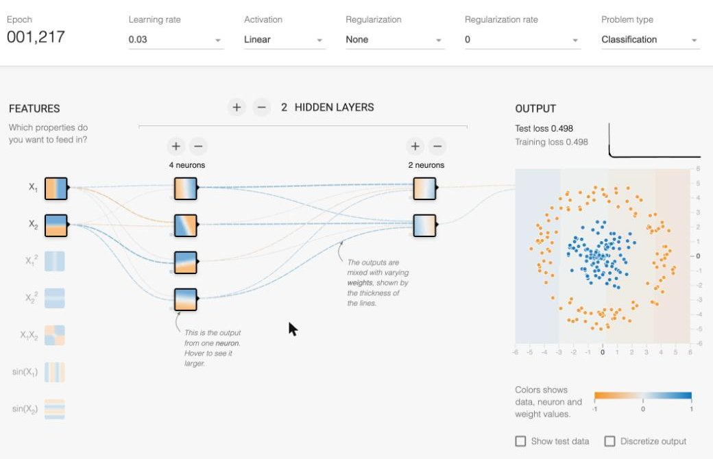
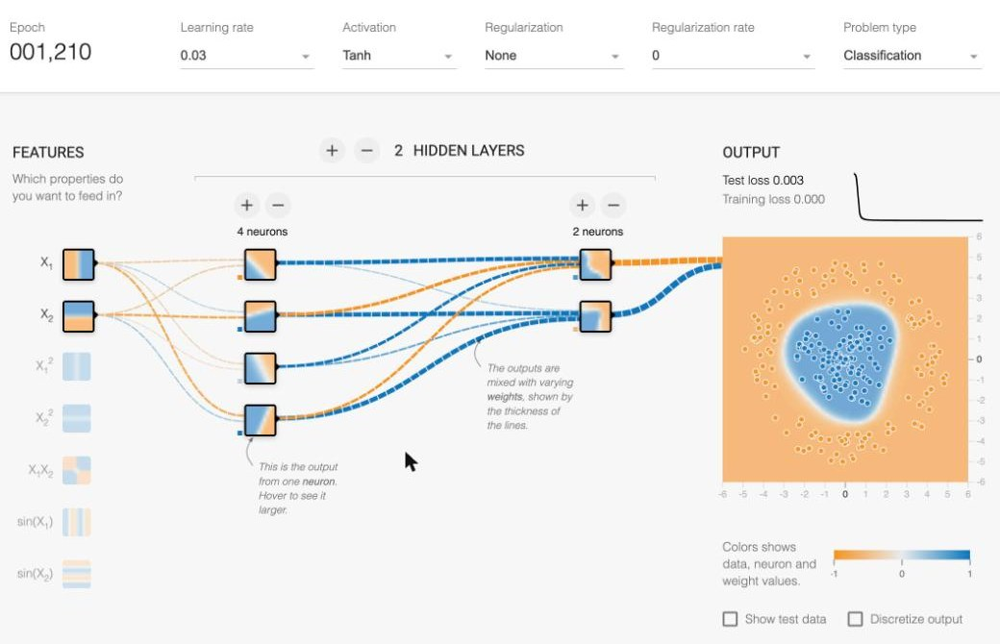
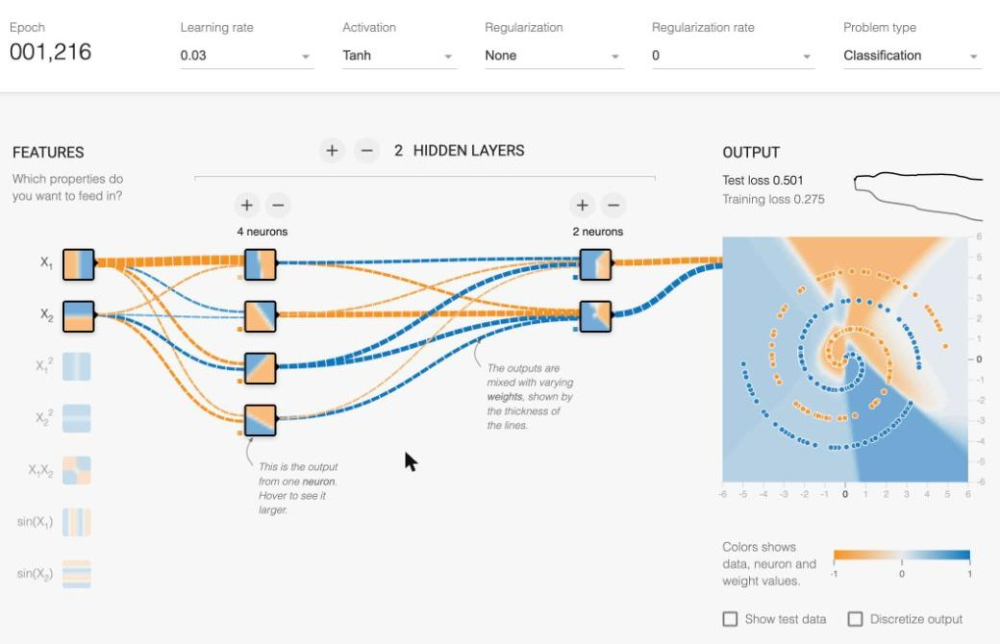
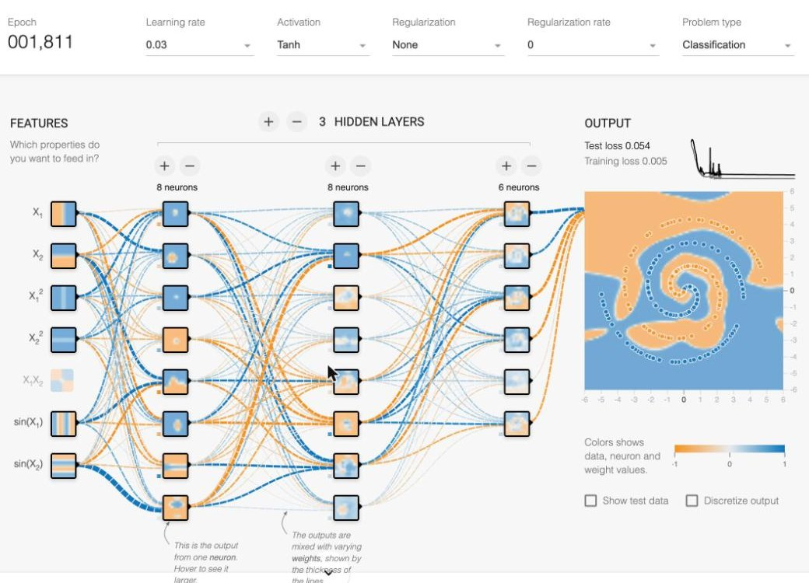

Six parts, one diagram, and what happened when I changed them in TensorFlow Playground.
Data goes in on the left, gets passed layer to layer, and an answer comes out on the right. The loss checks how wrong it was, and the optimizer sends that back to fix the weights.
Groups of neurons stacked in order. The input layer takes the raw data, hidden layers find patterns, and the output layer gives the answer.
In Playground: 2 hidden layers, 4 and 2 neuronsTakes its inputs, multiplies each by a weight, adds them up with a bias, and runs the result through an activation function. One number comes out.
In Playground: each little square shows what that neuron "sees"How strong each connection is. These are the numbers the network actually learns during training.
In Playground: line thickness, blue = positive, orange = negativeAdds a bend to each neuron's output so the network can learn curves. Without it, the whole network is just one straight line. Common ones: ReLU, tanh, sigmoid.
In Playground: the Activation dropdownOne number that says how wrong the predictions are. Lower is better. Training is just trying to push this number down.
In Playground: Test loss and Training lossLooks at the loss and nudges every weight a little in the direction that makes it smaller (gradient descent). The learning rate is how big each step is.
In Playground: the Play button and Learning rateCircle dataset, 2 hidden layers (4 and 2 neurons), about 1,200 epochs each. The only thing I changed was the activation function.


The spiral is the hardest dataset in the Playground. I tried the small network first, then added a layer, more neurons, and extra input features.


I knew the definitions already. Watching the weights get thicker and the boundary bend in real time is what made them make sense.
One dropdown took the loss from 0.498 to 0.003. Without it, extra layers don't add anything.
The small spiral network looked like it was learning. The test loss said otherwise.
Layers hold the neurons. Weights connect them. Activation lets them bend. Loss keeps score. The optimizer fixes the weights.
Try it yourself: playground.tensorflow.org